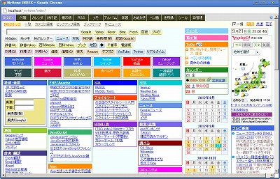
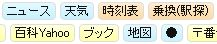
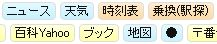
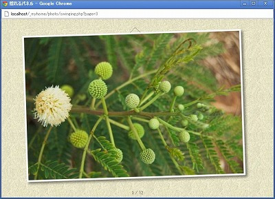
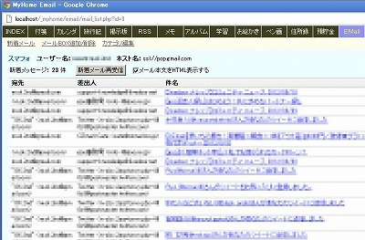
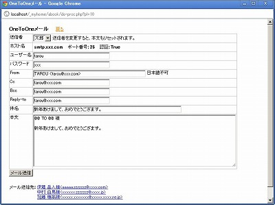
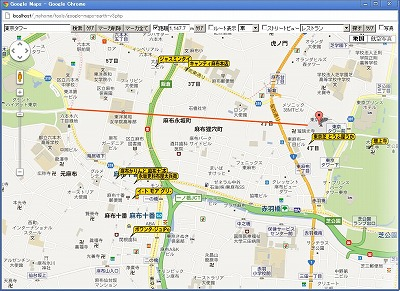
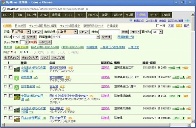

MyHome Portal 変更履歴
以下は、バージョン5.04以前の履歴です。 最新(5.05以降)の履歴に戻る
MyHome Portal Ver.5.04 (2012/10/14)
- 変更点
- 「アルバム」で全画面スライドショーからEscキーでアルバム標準画面に戻る際に、元のモードに関係なくスライドモード状態になっていたのを、元のモード(サムネイル/スライド)に戻すように修正。
- 「アルバム」の標準画面(サムネイル/スライド)で、キーボード操作によるフォルダ移動やページ移動等ができるようにしました。
・[Tab]：次フォルダ
・[Caps Lock]：前フォルダ
・[→]：次ページ
・[←]：前ページ
・10キーの[＋]：サムネイル画像サイズ大きく
・10キーの[－]：サムネイル画像サイズ小さく
・[A]：モード切替→サムネイル
・[B]：モード切替→サムネイル(B)
・[S]：モード切替→スライド
・[Space]：モード切替→全画面スライド
キーボード操作機能を使わない場合、実運用定義ファイルで以下を指定してください。
define("photo_FOLDER_MOVE_BY_KEYBOARD", "NO");キーボード操作によるモード切替を使わない場合、実運用定義ファイルで以下を指定してください。
define("photo_MODE_CHANGE_BY_KEYBOARD", "NO"); - 「アルバム」「全画面」スライドショーのキーボードによる操作のうち、10画像前へスキップのキーを、[Ctrl]キーから、[Caps Lock]キーに変更。
- ツール「Google Maps API V3版」「Google Maps (複数地点) API V3版」で、印刷において、極力用紙一杯に印刷できるようにしました。サイドバーやルートナビは印刷されません。なお、Chromeでは印刷がうまくできません。印刷する場合は、Firefoxをご利用ください。
≪印刷イメージ≫ - おもな変更モジュール
・photo/ajax-photo-view.php, slide.php
・tools/google-maps-earth-v3.php, google-maps-earth-multi-v3.php
・__define_common_my_sample.php
MyHome Portal Ver.5.03 (2012/09/23)
- 変更点
- ボタンのスタイルシート(CSS)を、common.cssとは別ファイルとして独立させました。tools_common.cssは分割していません。
- ボタンのスタイルシート(CSS)サンプルとして、角丸タイプ、グラデーションタイプなど、数種類用意しました。

radius.css, gradient.css, shadow.css, kube.css
 



実運用定義ファイルで任意のものを設定できます。
define("_STYLE_SHEET_BUTTON", "../style/button/gradient.css");オリジナルのCSSを作成して、ディレクトリ_myhome_myset等に置いて使用することもできます。
define("_STYLE_SHEET_BUTTON", "../../_myhome_myset/style/button/xxxxx.css"); - 「アルバム」に、画像(写真)をチルトシフト表示する機能を追加。「tiltShift.js」を使用。Chromeでのみ動作します。
http://www.noeltock.com/tilt-shift-css3-jquery-plugin/
画面サイズに合わせてリサイズはしません。チルトシフトデータのリサイズがうまくいかない(?)ため。
スライドモードの画像の右の「チルトシフト」をクリックしてください。キーボードによる表示画像のページ移動もできます。マウスクリックで、チルトシフト効果をON/OFF出来ます。 - 「アルバム」に、画像(写真)を拡大縮小アニメーション表示する機能を追加。拡大縮小率や速度を調整できます。IEでは動作しません。
スライドモードの画像の右の「拡大縮小」をクリックしてください。キーボードによる表示画像のページ移動もできます。 - ツール「PHP/JavaScript ソースコード表示&編集＋ファイルマネージャー」の編集で、「保存のみ」ボタンを追加。ただし、画面は一番上に戻ります。
- 追加モジュール
・style/button/standard.css, radius.css, gradient.css, shadow.css, kube.css
・photo/tiltshift.php, zoom-inout.php
・scripts/jquery-1.8.1.jsv ・scripts/tiltShift/* - おもな変更モジュール
・__common__/__define_common.php
・style/original/common.css
・index/__define_index_search.php, list-my-template-mynews.php
・photo/ajax-photo-view.php
・tools/code-file-edit.php
・__define_common_my_sample.php, __define_index_search_my_google.php, __define_index_search_my_yahoo.php
MyHome Portal Ver.5.02 (2012/09/09)
- 変更点
- 「メモ」一覧に、Ajax対応削除ボタン追加。ページ遷移なしに削除できます。
- 「メモ」修正画面で修正ボタン実行後、一覧ページで修正した行が画面内に表示されるようにスクロールするようにしました。ただし、IEではこの機能が働きません。(header("Location: list.php#id_999")の#から後ろがカットされてしまうため。)
- 「カレンダー(一覧表示)」「ID管理」「利用ガイド」の修正処理も、上記同様の処理を追加しました。
- 「メモ」で、件名を必須でなくしました。メモ本文のみでも登録できます。
- 「メモ」で、件名を全く使わない設定もできるようにしました。実運用定義ファイルで、以下を設定してください。
define("MEMO_SUBJECT_USE", "NO");既に実運用開始済で、件名を全く使わない設定に変更する場合、事前にメモ件名をメモ本文の1行目にコピーしてください。まず、データベースのバックアップをとった上で以下を実行してください。コマンドプロンプトで以下を実行してください。MySQL管理者ユーザーrootのパスワードが「kanri789」の場合。mysql -u root -pkanri789 use _mydb_memo; update m_memo set c_memo = concat(c_subject, '\n', c_memo); exit;
「メモ」一覧で、メモ件名がメモ本文にコピーされた事を確認の上、メモ件名を空白にします。mysql -u root -pkanri789 use _mydb_memo; update m_memo set c_subject = ''; exit;
- 「アルバム」に「パネルを揺らすように画像を表示する機能」を追加。以下のスタイルシートを使用して画像を揺らしています。IEでは動作しません。
http://jsfiddle.net/codepo8/MXq9x/
スライドモードの画像の右の「揺れる」をクリックしてください。
キーボードによる表示画像のページ移動もできます。
・[→], [Page Down], [Enter], [Space]：次画像 ・[←], [Page Up],[無変換]：前画像 ・[Tab]：10画像スキップ ・[Ctrl]：10画像前へスキップ ・[Home]：先頭画像へスキップ ・[End]：最後画像へスキップ
 - 「アルバム」「全画面」スライドショーのキーボードによる操作のうち、10画像前へスキップのキーを、半角/全角キーから、Ctrlキーに変更。半角/全角キーでは動作が不安定なため。
- 「アルバム」「全画面(Ajax)」で、スライドショーを一時停止できるようにしました。 キーボード[A]キーで一時停止/再開が出来ます。
- 「INDEX」トップページの各ボックスのボーダー幅を実運用定義ファイルで指定できるようにしました。デフォルトを1pxにしました。
define("index_BOX_BORDER_WIDTH", '1px'); // ボックスのボーダー幅 - 「INDEX」トップページの各ボックスのボーダー色を、タイトルと同じではなく、共通の色に設定できるようにしました。タイトルと同じ色にする場合は、''を指定してください。
define("index_BOX_BORDER_COLOR", '#b0b0b0;'); // ボックスのボーダー色：全ボックスを同じ色にする場合 - 「INDEX」トップページ右に配置するRSSブログパーツサンプルも、上記ボックス指定が適用されるようにしました。
- 追加モジュール
・memo/delete.php
・photo/swinging.php - おもな変更モジュール
・memo/__define.php, list.php, list-my-template.php, input.php
・calendar/list-my-template.php, input.php
・guide/list-my-template.php, input.php
・id-manager/list-my-template.php, input.php
・photo/ajax-photo-view.php, slide.php
・index/__define.php, index.php
・blog-parts/rss-tv.inc, rss-ameba-news.inc, rss-google-news.inc, rss-nhk-news.inc
・style/original/memo.css, index.css
・__define_common_my_sample.php
MyHome Portal Ver.5.01 (2012/08/26)
- 変更点
- 「INDEX」トップページ「Twitter」検索ボタンの検索キーに「lang:ja」を付けるようにしました。また、ツイート範囲を「トップ」でなく「すべて」にしました。
- 「INDEX」トップページに「リアルタイム」検索ボタンを追加。Yahooリアルタイム検索をします。

- 「INDEX」の「Myニュース」に「Yahoo:リアルタイム」検索ボタンを追加しました。

- Firefoxのボタンサイズを他のブラウザと同じになるように調整。
- おもな変更モジュール
・index/__define_index_search.php, list-my-template-mynews.php
・__define_index_search_my_google.php, __define_index_search_my_yahoo.php
・style/original/common.css
MyHome Portal Ver.5.00 (2012/08/18)
- 変更点
- Ver.1.00リリースから約4年経過で5年目に入ったということで、Ver.5.00としました。
- 新コンテンツ「メール」を追加しました。


- SMTP/POP3メールの受信ができます。Gmail等SMTP/POP3対応のメールも受信できます。
- 複数のメールアカウントのメールを同時に一括して受信ができます。最新の受信メールから最大10件を一覧表示します。(件数は実運用定義ファイルで変更可)
- メールBOX名をクリックすると、最新の受信メールから最大50件を一覧表示します。(件数は実運用定義ファイルで変更可)
- 一覧リストのメール件名をクリックすると、本文を別ウインドウで表示します。本文表示は、HTML有効/無効を選択できます。添付ファイルは読み込みません。
- この「メール」機能を使うと、他のユーザーから、メールやメールアカウントのパスワードを参照される可能性がありますので、MyHome Portalを個人で利用されている場合を除いては利用しないことをお勧めします。
- この「メール」機能でメールを受信しても、メールサーバーにメールは残ります。通常使用しているメールクライアントソフトでの受信に支障は出ません。
- Gmailで使う場合は、「設定」の「メール転送とPOP/IMAP」で、「今後受信するメールで POP を有効にする」に設定してください。
また、「POPでメールにアクセスする場合」を、「Gmailのメールを受信トレイに残す」に設定してください。 - Gmailで使う場合は、ユーザー名(メールアカウント)の頭に「recent:」を付けてください。これを付けないと、サーバ側で未読既読管理をされるため、本文を表示したメールが既読扱いとなり、次回から取得できなくなり、不都合が生じます。「recent:」を付けると、過去30日分のメールが既読分も含めて受信されます。
- メールサーバーによっては、既にメール・サーバーから取り出し済みのメールも取得してしまう場合があるようです。
- メール受信には「PEAR::Net_POP3」を使っています。XAMPPでPHPをインストールした場合、「PEAR::Net_POP3」がインストールされていない可能性があります。ファイル「xampp/php/PEAR/Net/POP3.php」があればインストールされています。ファイルが無い場合は、コマンドプロンプトで以下を実行してインストールしてください。
pear install Net_POP3
- SSL対応のPOP3サーバーから受信する場合、PHPをSSL対応にする必要があります。
確認は、phpinfoで「Registered Stream Socket Transports」に「ssl」が含まれているかを確認します。http://localhost/xampp/phpinfo.php
含まれていない場合は、「xampp/php/php.ini」を修正します。以下の行;extension=php_openssl.dll
のコメントアウトを外した上で、Apacheを再起動します。Windowsの場合、コマンドプロンプトで以下を実行してください。net stop Apache2.2 net start Apache2.2
SSLを使う場合、POP3ホスト名設定で、ホスト名の頭に「ssl://」を付けてください。Gmailの例では、「ssl://pop.gmail.com」となります。ポート番号は、995になります。 - Ver.4.25以前で既に環境を構築済みの場合は、以下の手順で「メール」のデータベース追加等の環境設定をしてください。
コマンドプロンプトで以下を実行してください。以下、MySQL管理者ユーザーrootのパスワードを「kanri789」、インストールドライブを「D:」として説明します。
≪サンプルデータベース作成≫mysql -u root -pkanri789 create database _db_email; exit d: cd "D:\xampp\htdocs\_myhome\z_db_backup" mysql -u root -pkanri789 _db_email < _db_email.bk.txt mysql -u root -pkanri789 _db_email < create_view_db_email.txt mysql -u root -pkanri789 GRANT SELECT,INSERT,UPDATE,DELETE ON _db_email.* TO myhome@localhost; FLUSH PRIVILEGES; exit
≪実運用データベース作成＆環境設定≫
＊実運用データベース作成
・MySQLを一旦停止します。net stop mysql
・データベース「_db_email」をコピーして、実運用データベース「_mydb_email」を作成します。mkdir D:\xampp\mysql\data\_mydb_email copy D:\xampp\mysql\data\_db_email\* D:\xampp\mysql\data\_mydb_email
・MySQLを再起動します。net start mysql
・データベースのビューを作成します。d: cd "D:\xampp\htdocs\_myhome\z_db_backup" mysql -u root -pkanri789 _mydb_email < create_view_mydb_email.txt
・データベースのアクセス権を設定します。mysql -u root -pkanri789 GRANT SELECT,INSERT,UPDATE,DELETE ON _mydb_email.* TO myhome@localhost; FLUSH PRIVILEGES; exit;
＊実運用定義ファイル __define_contents_my.phpに、以下を追加してください。$navi_item[] = array("href"=>"email/", "query"=>"arg=session", "name"=>"ＥＭａｉｌ");＊実運用定義ファイル __define_common_my.phpに、以下を追加してください。define("_DB_SCHEMA_email", "_mydb_email"); - 追加モジュール
・email/* 一式
・scripts/tristen-tablesort/* 一式
・style/original/email.css
・z_db_backup/_db_email.bk.txt, create_view_db_email.txt, create_view_mydb_email.txt - おもな変更モジュール
・__define_common_my_sample.php, __define_contents_my_sample.php
・setup-sample.php, mydb_restore.txt.php, db_backup.txt.php, db_restore.txt.php
MyHome Portal Ver.4.24 (2012/07/22)
- 変更点
- 「住所録」に、「OneToOneメール」機能を追加しました。
住所録一覧で、チェックした相手宛てにOne To Oneでメール送信できます。
メール本文に、「%% TO %%」を入れておくと、送信時に宛先人名(住所録の姓・名)で置き換えて送信します。
 - 「住所録」に「OneToOneメール送信者」機能を追加しました。
「OneToOneメール」送信者を複数登録できます。「OneToOneメール」送信時に、送信者を選択できます。
- 既に前のバージョンで実運用中の場合は、データベース「_mydb_abook」にテーブル「m_mailfrom」を追加してください。追加は、コマンドプロンプトで、以下を実行してください。
MySQL管理者ユーザーrootのパスワードを「kanri789」、インストールドライブを「D:」として説明します。
≪実運用データベース≫D: cd "D:\xampp\htdocs\_myhome\z_db_backup" mysql -u root -pkanri789 _mydb_abook < _db_abook_add_m_mailfrom.txt
- 追加モジュール
・abook/mail-one2one.php, mailfrom.php, mailfrom-input.php - おもな変更モジュール
・__common__/include-common-all.php
・abook/do-proc.php, list-my-template.php, _contents-header.php
・z_db_backup/_db_abook_add_m_mailfrom.txt
MyHome Portal Ver.4.23 (2012/06/17)
- 変更点
- 「カレンダー」月間カレンダーで、次月の1週間分を合わせて表示するようにしました。
- 「カレンダー」月間カレンダーで、当日がカレンダーの4行目以降にあたる場合、スクロールアップして表示するようにしました。
既に本番運用済みで、この機能を使う場合、実運用定義ファイル__define_contents_my.phpを以下のように修正して下さい。
$navi_item[] = array("href"=>"calendar/", "query"=>"arg=session", "name"=>"カレンダ"); ↓↓↓ $navi_item[] = array("href"=>"calendar/", "query"=>"arg=session&#today", "name"=>"カレンダ"); - 「カレンダー」月間カレンダーの「←前月」「→次月」のリンクをページ下にも表示するようにしました。
- ツール「HTML カラーチャート ＋ Photoshop-like JavaScript Color Picker」で、16進カラーコード入力欄に、頭に#の付いたコードを入力しても大丈夫なように修正。
- おもな変更モジュール
・calendar/_my_calendar.php, __define.php
・style/original/calendar.css
・__define_common_my_sample.php
・__define_contents_my_sample.php
・__common__/__define_contents.php
・tools/refresh_web/colorpicker/ColorValuePicker.js
MyHome Portal Ver.4.22 (2012/06/03)
- 変更点
- アルバムの「EXIF情報」に、GPS緯度・経度追加。
EXIFデータにGPSデータが含まれている場合、緯度、経度を表示し、Googleマップとツール「Google Maps API V3版」リンクも表示。
- アルバムに「GPSマップ」を追加。アルバムのカレント・ディレクトリ内の写真のうち、EXIF-GPSデータがある写真全てをGoogleマップで表示します。対象の写真が多いと表示に時間がかかります。
- ツール「Google Maps API V3版」で、パラメーター(&photo=)に画像(写真)のURL指定がある場合、 画像をマーカーアイコンとして表示するようにしました。アルバムの「EXIF情報」との連動用です。
- スマートフォン スケジュール表示、RSSリーダー、チャット機能で使用しているjQuery Mobileのバージョンを、1.1.0にしました。
- おもな追加モジュール
・photo/maps-photo-v3.php - おもな変更モジュール
・photo/exif-read.php, _contents-header.php
・tools/google-maps-earth-v3.php
MyHome Portal Ver.4.21 (2012/05/14)
- 変更点
- 「INDEX」に「Myニュース」を追加しました。ニュース検索用キーワードを登録して、ボタンクリックでGoogleニュース検索が出来ます。キーワードは、AND/ORの指定ができます。検索対象は、「記事本文」「記事見出しのみ」が選択できます。通常のGoogle検索の24時間以内、1週間以内検索もできます。
- 既に前のバージョンで実運用中の場合は、Myニュース用のテーブル「m_mynews」を、データベース「_db_index/_mydb_index」に追加してください。MySQL管理者ユーザーrootのパスワードを「kanri789」、インストールドライブを「D:」として説明します。
≪サンプルデータベース≫
D: cd "D:\xampp\htdocs\_myhome\z_db_backup" mysql -u root -pkanri789 _db_index < _db_index_add_m_mynews.txt mysql -u root -pkanri789 _db_index < create_view_db_index.txt
≪実運用データベース≫
D: cd "D:\xampp\htdocs\_myhome\z_db_backup" mysql -u root -pkanri789 _mydb_index < _db_index_add_m_mynews.txt mysql -u root -pkanri789 _mydb_index < create_view_mydb_index.txt
- ID管理で管理する項目数を増やせるようにしました。
増やす場合は、データベーステーブルのカラム追加等を行う必要があります。項目を2つ増やして8個にする場合で説明します。
（MySQL管理者ユーザーrootのパスワード「kanri789」、インストールドライブ「D:」）
・データベーステーブルのカラム追加。
mysql -u root -pkanri789 use _mydb_zid_mgr_a; ALTER TABLE m_pass ADD c_item7 varchar(45) NOT NULL AFTER c_item6; ALTER TABLE m_pass ADD c_item8 varchar(45) NOT NULL AFTER c_item7; use _mydb_zid_mgr_b; ALTER TABLE m_pass2 ADD c_val7 varchar(700) NOT NULL; ALTER TABLE m_pass2 ADD c_val8 varchar(700) NOT NULL; exit;
・データベース「_mydb_zid_mgr_a」のビュー「v_pass」を再作成します。
カラム数8用のcreate_view_mydb_zid_mgr_a_8.txtを用意していますので、これを利用します。
D: cd "D:\xampp\htdocs\_myhome\z_db_backup" mysql -u root -pkanri789 _mydb_zid_mgr_a < create_view_mydb_zid_mgr_a_8.txt
・実運用定義ファイルで、ID管理の項目最大数を設定してください。define("ID_MANAGER_ITEM_NUMBER", 8);・実運用定義ファイルで、ポップアップウインドウの高さを変更してください。
define("POP_WIN1_HEIGHT_id_manager", 170); - 追加モジュール
・index/mynews.php, list-my-template-mynews.php
・z_db_backup/_db_index_add_m_mynews.txt
・z_db_backup/create_view_mydb_zid_mgr_a_8.txt - おもな変更モジュール
・index/_contents-header.php
・id-manager/__define.php, list.php, input.php
・z_db_backup/create_view_db_index.txt, create_view_mydb_index.txt
・__define_common_my_sample.php
MyHome Portal Ver.4.20 (2012/04/22)
- 変更点
- ツールに「Google ホームページ対訳」を追加。指定したURLのホームページとGoogle翻訳で翻訳したページを左右に並べて表示します。左右のフレームは同時にスクロールできます。
- ツール「Google Maps API V3版」で、複数マーカーがある時に、ルート検索ができるようにしました。
- ツール「Google Maps API V3版」「Google Maps (複数地点) API V3版」で、クリックした任意の地点にマーカー表示を可能に。追加されたマーカーは、ルート表示の対象になります。
- ツール「Google Maps API V3版」「Google Maps (複数地点) API V3版」で、マーカーの削除を可能に。
- ツール「Google Maps (複数地点) API V3版」で、URL引数で複数地点の地名を渡す場合、「,」区切りでなく、「+」区切りに仕様変更。「,」の入った緯度・経度データでも検索できるようにするため。
- 追加モジュール
・tools/google-translate.php - おもな変更モジュール
・tools/google-maps-earth-v3.php, google-maps-earth-multi-v3.php
・index/__define_index_search.php
・__define_index_search_my_google.php, __define_index_search_my_yahoo.php
MyHome Portal Ver.4.19 (2012/04/08)
- 変更点
- 「メモ」のカテゴリフィルタをselectプルダウンからradioボタンに変更。
- Chrome、Firefoxで、ラジオボタン、チェックボックスの位置と横のラベルテキストの位置が縦にずれる問題の対策として、スタイルシート(common.css、tools_common.css)に以下を追加。
input[type="radio"], input[type="checkbox"] { vertical-align: middle; } - 「メモ」の一覧リスト件名のスタイルを実運用定義ファイルで、変更できるようにしました。
define("MEMO_LIST_SUBJECT_STYLE", "background-color:#d0d0ff;border-style:solid;border-color:#808080;border-width:1px 0 0 0;"); - 「メモ」のカテゴリに背景色を設定できるようにしました。既に運用中の場合は、カテゴリ編集で背景色を設定してください。
- データベース「_db_memo」/「_mydb_memo」のテーブル「m_category」に列「c_categoryIcon」を追加しました。既に前のバージョンで実運用中の場合は、以下の手順で、列の追加とデータの更新作業を行ってください。MySQL管理者ユーザーrootのパスワードを「kanri789」、インストールドライブを「D:」として説明します。
《実運用DB「_mydb_memo」の場合》
mysql -u root -pkanri789 use _mydb_memo; ALTER TABLE m_category ADD c_categoryDisplayColor varchar(50) NOT NULL AFTER c_categoryName; exit; D: cd "D:\xampp\htdocs\_myhome\z_db_backup" mysql -u root -pkanri789 _mydb_memo < create_view_mydb_memo.txt
- 「カレンダー」ミニカレンダーの日付クリックで、スケジュール入力画面が開くように仕様変更。
- 「カレンダー」週間一覧のハンドル名の背景色を、各ユーザー設定のページ背景色を使うようにしました。
- 「INDEX」トップページのブログパーツを横に3列並べられるようにしました。実運用定義ファイルで次の形式で定義してください。
define("BLOG_PARTS_SCRIPT_RIGHT21_index", "???"); define("BLOG_PARTS_SCRIPT_RIGHT22_index", "???"); define("BLOG_PARTS_SCRIPT_RIGHT23_index", "???"); define("BLOG_PARTS_SCRIPT_RIGHT24_index", "???"); - 「Junk Place：テレビ番組表RSS」http://rey.rash.jp/junk/を使ったINDEXトップページ用テレビ番組表示ブログパーツ「rss-tv.inc」を追加。
- 追加モジュール
・blog-parts/rss-tv.inc - おもな変更モジュール
・__common__/__define_common.php, include-common-mp-list.php
・memo/category.php, list.php, list-my-template.php
・calendar/_my_calendar.php, week.php
・style/original/common.css, tools_common.css, calendar.css, mp-list.css
・z_db_backup/create_view_db_memo.txt, create_view_mydb_memo.txt
・__define_common_my_sample.php
MyHome Portal Ver.4.18 (2012/03/25)
- 変更点
- 「INDEX」「カレンダー」等のカテゴリ編集画面等で、背景色やアイコンを変更した場合、編集画面で直接変更結果が確認できるようにしました。
- 「カレンダー」で、カテゴリ設定色をスケジュールの背景色とするように仕様変更。既に運用済みの場合、カテゴリ設定色を薄い色に変更をお願いいたします。カテゴリ設定色をスケジュールの背景色に使用しない場合、実運用定義ファイルで、以下を設定してください。
define("CALENDAR_CATEGORYCOLOR_BACKGROUND", "NO");
- 「カレンダー」で、個々のスケジュールの頭に◆を付けるようにしました。
個々のスケジュールの頭に付ける文字を無くすか変更する場合、実運用定義ファイルで、以下を設定してください。
define("CALENDAR_SCHEDULE_PREFIX", ""); - 「カレンダー」で個々のスケジュールに枠を付けました。枠を無くすかスタイルを変更する場合は、実運用定義ファイルで、以下の形式で設定してください。
define("CALENDAR_SCHEDULE_BORDER_STYLE", "border:1px dotted #d0d0d0;margin-top:-1px;"); - 「カレンダー」月間カレンダーの今日の枠のスタイルを実運用定義ファイルで変更可能にしました。変更する場合は、実運用定義ファイルで、以下の形式で設定してください。
define("CALENDAR_SCHEDULE_TODAY_STYLE", "background-color:#d0fff0;border:#0080e0 2px solid;"); - 「カレンダー」その他スタイルシートの一部微調整。
- ボタンの上にマウスを載せた時にカーソルをリンクポインタカーソルに。common.cssに以下を追加。
button, input[type="button"], input[type="submit"], input[type="reset"], input[type="file"] { cursor:pointer; } - おもな変更モジュール
・__common__/include-common-mp-list.php, __define_common.php, include-color-chart.php
・calendar/_my_calendar.php, category.php, input.php, list-my-template.php, year.php, week.php
・account/myprofile.php, edit-myprofile.php, list-my-template-edit-friends.php
・index/category.php
・sticky/category.php
・rss/list.php
・style/original/common.css, calendar.css, account.css, weather.css
・__define_common_my_sample.php
MyHome Portal Ver.4.17 (2012/03/18)
- 変更点
- 「カレンダー」で、詳細表示モードでない場合、件名をホバーすると、スケジュール本文を表示するようにしました。
- 「カレンダー」で、本人以外が新規登録したスケジュールは、登録したユーザー名を合わせて表示するようにしました。ただし、システム・バージョンアップ前に登録済みのスケジュールには適用されません。
- 「カレンダー」に伝言機能を追加。
- 「カレンダー」の伝言機能では、合わせて電子メールで伝言を送信することもできます。
ただし、宛先ユーザーが、スケジュール送信先電子メールアドレスを登録している場合に限ります。 - 「カレンダー」の伝言機能では、合わせて、スケジュールの新規登録ができます。
伝言機能によるスケジュール登録では、複数ユーザーにスケジュールを一括登録できます。
伝言機能によるスケジュール登録では、宛先ユーザーが「書込許可」設定していないユーザーにも書き込みできます。 - 伝言は、伝言ページを本人が開いた時点で、既読扱いとなります。

- 未読伝言がある場合、「INDEX」トップページ、カレンダー月間表示ページに「未読伝言あり」と表示します。
- 伝言機能を使わない場合、実運用定義ファイルで、以下を定義してください。
define("_CALENDAR_SEND_MESSAGE_USE", "NO"); -
既に前のバージョンで実運用中の場合は、データベース「_db_calendar/_mydb_calendar」のテーブル「m_schedule」に列の追加と、 テーブル「m_message」の追加をしてください。
追加は、コマンドプロンプトで、以下を実行してください。
MySQL管理者ユーザーrootのパスワードを「kanri789」、インストールドライブを「D:」として説明します。
≪サンプルデータベース≫
mysql -u root -pkanri789 use _db_calendar; ALTER TABLE m_schedule ADD add_id_account int(10) unsigned NOT NULL default '0'; ALTER TABLE m_schedule ADD upd_id_account int(10) unsigned NOT NULL default '0'; exit; D: cd "D:\xampp\htdocs\_myhome\z_db_backup" mysql -u root -pkanri789 _db_calendar < _db_calendar_add_m_message.txt mysql -u root -pkanri789 _db_calendar < create_view_db_calendar.txt
≪実運用データベース≫
mysql -u root -pkanri789 use _mydb_calendar; ALTER TABLE m_schedule ADD add_id_account int(10) unsigned NOT NULL default '0'; ALTER TABLE m_schedule ADD upd_id_account int(10) unsigned NOT NULL default '0'; exit; D: cd "D:\xampp\htdocs\_myhome\z_db_backup" mysql -u root -pkanri789 _mydb_calendar < _db_calendar_add_m_message.txt mysql -u root -pkanri789 _mydb_calendar < create_view_mydb_calendar.txt
- 「メモ」登録画面の件名とメモをGET引数からも指定できるようにしました。
これによりブックマークレットをブラウザに登録しておいて、表示しているホームページのタイトルとURLをフォームに自動入力した登録画面を開くことができます。
ブックマークレットのひな型は、「メモ」登録画面に記載しています。 - ユーザーのハンドル名の全角条件を廃止。半角英数字も可としました。
- 「カレンダー」のスタイルシート(calendar.css)に、以下を追加。上位階層でfont-sizeを指定しても有効にするため。
b { font-size: inherit; } i { font-size: inherit; } s { font-size: inherit; } - 追加モジュール
・calendar/input-include.php, message.php, message-delete.php
・z_db_backup/_db_calendar_add_m_message.txt - おもな変更モジュール
・calendar/_contents-header.php, _my_calendar.php, input.php, list.php, list-my-template.php
・index/__define.php, index.php
・memo/input.php
・abook/maps-abook.php, maps-abook-v3.php
・account/*
・style/original/index.css, calendar.css
・z_db_backup/create_view_db_calendar.txt, create_view_mydb_calendar.txt
・__define_common_my_sample.php
MyHome Portal Ver.4.16 (2012/03/04)
- 変更点
- 「INDEX」ホームページ（ブックマーク）の1件単位の登録画面を追加。登録画面のタイトルとURLをGET引数からも指定できるようにしました。
これにより、以下のようなブックマークレットをブラウザに登録しておくことで、表示しているホームページのタイトルとURLをフォームに自動入力した登録画面を開くことができます。
javascript:(function(){window.open("http://localhost/_myhome/index/input.php?title="+encodeURIComponent(document.title)+"&url="+encodeURIComponent(document.URL))})(); - 「INDEX」ピックアップ登録画面もタイトルとURLをGET引数からも指定できるようにしました。
これにより、以下のようなブックマークレットをブラウザに登録しておくことで、表示しているホームページのタイトルとURLをフォームに自動入力した登録画面を開くことができます。
javascript:(function(){window.open("http://localhost/_myhome/index/oftenuse.php?title="+encodeURIComponent(document.title)+"&url="+encodeURIComponent(document.URL))})(); - 「INDEX」ホームページ（ブックマーク）の1件単位の修正画面を追加。修正画面はポップアップウインドウで開き、Ajax利用で、元画面はページ遷移なしで修正できます。
- 「INDEX」ホームページ（ブックマーク）の1件単位の削除機能を追加。Ajax利用で、ページ遷移なしで削除できます。
- ツール「Google Maps API V3版」と「Google Maps (複数地点) API V3版 」に、距離測定機能を追加しました。
距離測定機能は、「Seis Pesos - Google Maps API（グーグル・マップ）サンプル集」の「距離を測定」を参考にさせていただきました。
http://japonyol.net/editor/googlemaps.html
 - ChromeでGoogleマップのサイドバーの背景色をopacityで指定するとスクロールバーがきたなくなるので、画像データで置き換え。
background: #ffffff; filter: alpha(opacity=75); -moz-opacity:0.75; opacity:0.75; ↓ background: url(../images/trans-white.png);
- 追加モジュール
・index/_include-list-data.php, edit.php, update.php, delete.php, delete-offenuse.php
・images/trans-white.png - おもな変更モジュール
・index/oftenuse.php, list.php, list-my-template.php, input.php
・abook/maps-abook.php, maps-abook-v3.php
・calendar/maps-alone.php, __html-my-header-maps.php
・diary/maps-diary.php, __html-my-header-maps.php
・tools/google-maps-earth-v3.php, google-maps-earth-multi-v3.php
MyHome Portal Ver.4.15 (2012/02/26)
- 変更点
- 「住所録」一覧とマップ(V3)に、任意のマーカーアイコンを表示する機能を追加しました。
マーカーアイコンは、デフォルトでは、ディレクトリ「/_myhome/icon/maps」のアイコンを使います。
実運用でマーカーアイコンを追加・変更する場合は、ディレクトリを変更し、実運用定義ファイルでパスを設定してください。
define("DIARY_MAPS_ICON_FOLDER", "../../_myhome_myset/_my_maps_icon/"); - 「住所録」分類(カテゴリ)で、マーカーアイコンを指定できます。
- 「住所録」個々の住所データにマーカーアイコンを指定できます。個々の住所データにマーカーアイコンの設定がある場合、こちらが優先します。
- データベース「_db_abook」/「_mydb_abook」のテーブル「m_abook」に列「c_markericon」を追加しました。
データベース「_db_abook」/「_mydb_abook」のテーブル「m_category」に列「c_categoryIcon」を追加しました。
既に前のバージョンで実運用中の場合は、以下の手順で、列の追加とデータの更新作業を行ってください。MySQL管理者ユーザーrootのパスワードを「kanri789」、インストールドライブを「D:」として説明します。
《実運用DB「_mydb_abook」の場合》mysql -u root -pkanri789 use _mydb_abook; ALTER TABLE m_abook ADD c_markericon varchar(255) NOT NULL AFTER c_memo; ALTER TABLE m_category ADD c_categoryIcon varchar(255) NOT NULL AFTER c_categoryDisplayOrder; exit; D: cd "D:\xampp\htdocs\_myhome\z_db_backup" mysql -u root -pkanri789 _mydb_abook < create_view_mydb_abook.txt
- 既に運用中のデータベース「_mydb_abook」のカテゴリに、マーカーアイコンを追加する例。
「分類編集」で手動で登録するか、以下のようにコマンドプロンプトで登録してください。
MySQL管理者ユーザーrootのパスワードを「kanri789」として説明します。
分類ID(カテゴリID)が以下の場合で、説明します。日本百名山 3 世界遺産 4 鉄道駅 5 桜名所 6 日本百選 7
mysql -u root -pkanri789 use _mydb_abook; update m_category set c_categoryIcon = 'mountains.png' where id_category = 3; update m_category set c_categoryIcon = 'worldheritagesite.png' where id_category = 4; update m_category set c_categoryIcon = 'train2.png' where id_category = 5; update m_category set c_categoryIcon = 'sakura.gif' where id_category = 6; update m_category set c_categoryIcon = 'award.png' where id_category = 7; exit;
- 「住所録」の「日本百名山」のデータを更新しました。日本百名山に合わせて、二百名山、三百名山のデータを追加しました。
データはホームページ「日本百選と座標値（経緯度数値）」のものを使わせていただきました。
http://100sen.cyber-ninja.jp/ - 「実運用サンプル」フォルダの「日本百名山.csv」も入れ替えています。
運用済みの実運用データベースの日本百名山データを差し替える場合は、次の手順で行ってください。
データを差し替えると、チェック項目のチェックデータ(サンプルでは制覇のデータ)が失われますので、ご注意ください。
1.既存のデータベースから日本百名山データを削除する。
コマンドプロンプトで、以下を実行する。(rootのパスワードがkanri789の場合)
注：id_categoryは実運用データベースの日本百名山の分類IDと同じものを指定してください。
事前にデータベースのバックアップをとることをお勧めします。
mysql -u root -pkanri789 use _mydb_abook; delete from m_abook where id_category = 3;
2.ツール「MySQL管理ツール」で、日本百名山.csvをアップロードしてください。CSVファイルをアップロードする際は、 id_account、id_categoryを実運用データベースに合わせた上でアップロードしてください。 - 「住所録」に「日本百選」データを追加しました。
データは、ホームページ「日本百選と座標値（経緯度数値）」のものを使わせていただきました。
http://100sen.cyber-ninja.jp/
名称について、MeCabで読み変換したものを登録しています。正しい読みになっていないものもあります。 - 「住所録」分類フィルタで、「日本百選」を選択すると専用の一覧ページが表示されます。
- 「実運用サンプル」フォルダにCSVファイルとして「日本百選.csv」を入れています。
実運用データベースに、日本百選データを追加登録する場合、まず、「分類編集」で分類を「日本百選」等の名前で登録してください。
その上で、ツール「MySQL管理ツール」で、この「日本百選.csv」をアップロードしてください。CSVファイルをアップロードする際は、 id_account、id_categoryを実運用データベースに合わせた上でアップロードしてください。 - 日本百選データを実運用データベースに登録した場合、日本百選の分類ID(id_category)を実運用定義ファイルで設定してください。
例）define("HYAKUSEN_CATEGORY_ID", 7);日本百選データを実運用データベースに登録しない場合、実運用定義ファイルで-1を設定してください。
例）define("HYAKUSEN_CATEGORY_ID", -1);

- 「住所録」の「世界遺産」一覧に、世界遺産の多い国20か国程の区別フィルタを追加しました。
- 「世界遺産」データの国名表記を一部修正。上記、区別フィルタが正常動作するためには、「世界遺産」データも「世界遺産_2011.csv」を使って、入れ替えてください。
- ツール「Google Maps API V3版」と「Google Maps (複数地点) API V3版 」に、マウスクリックした地点の標高を表示する機能を追加。
- 「住所録」のマップ(V3)に、緯度・経度、住所、標高を表示する機能を追加。
- 追加モジュール
・abook/list-my-template-hyakusen.php, list-hyakusen-shurui.php
・実運用サンプル/日本百選.csv
・icon/maps/* - おもな変更モジュール
・abook/__define.php, list.php, category.php, do-proc.php, maps-abook.php, maps-abook-v3.php
・abook/list-my-add-filter.php, list-my-template-*.php, input.php
・tools/google-maps-earth-v3.php, google-maps-earth-multi-v3.php
・style/original/abook.css
・z_db_backup/create_view_db_abook.txt, create_view_mydb_abook.txt
・実運用サンプル/日本百名山.csv, 世界遺産_2011.csv